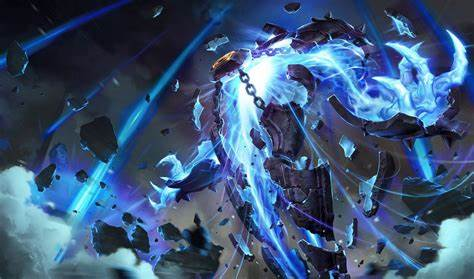

The history of deepwoken: The fall of Etris
The Lord Regent true name "Zi'eer" is a mysterious individual and contractor who rose to power and has absolute control over Etrea, staying exclusively within his palace in the capital city and secretly being the Fourth Prophet of the Ministry.
Nobody in Etris is sure of where he originates, but they accept him for his formidable power, and his actions appear to be in the best interests of Etris. Lord Regent is the Fourth Prophet out of nine Ministry Prophets; a ranking system based on strength.[1]
Archivist Journal: 'Megalodaunt' by Archivist Caliban Sr.
Winter, 521 CE. Subject C hasn't moved within his enclosure all day. He's resting on the ground, staring intently at the glass surrounding him, for no discernable reason to us. Even for evening supper, he's yet to move an inch; it's quite the blight, as the body's stench has accumulated more over time. He just stares, unmoving. This came as quite a shock to Faris and I, as Subject C usually becomes frenzied when brought near a corpse, yet.. nothing. Late into the night, Subject A rose from her slumber and released a deafening screech, waking every living being in the facility easily. The shaking floor somehow stirred even Subject C to an upright position, looking attentively toward the alpha. Throughout our weeks studying, the relationship between an alpha megalodaunt and a subordinate megalodaunt has brought many interesting questions into our hands. While not appearing to be reasonably intelligent creatures, they have a strong sense of social hierarchy, and their place in their 'society,' if it could be called that. Subordinate megalodaunts tend to pay close attention to the alpha of their territory, for reasons we cannot understand. Subject A has expressed the impressive ability to bring a creature as lazy as Subject C to his feet, a feat insurmountable to us, meager scholars. As it has been a notably long time since Subject C has eaten, he finally began to motion toward his now hours-old dinner; yet, Subject A had seemed to deny this, taking the meal for herself. Astounding, isn't it? Faris wouldn't even believe me if I told him twice! Once the excitement died down, I returned to slumber.
Today, the realization has hit that we lack additional food for our dear subjects. Last night's meal for Subject C was the last body on-hand; unfortunately, it is winter. Pathfinders tend to be.. shakey, during this time of year. It's more difficult to find gullible, bright-eyed, hopeful ones. During last winter, we prepared a surplus of bodies in preparation for this. This winter, however, we became careless. Too much time spent on experimentation and studying, of course. But, I do not want to end my studies here, and a megalodaunt's appetite is.. marvelous. I'll contemplate my options. I'm determined to see these experiments through to the end. I'm writing once more, only a few hours past my previous entry. I've prepared a new meal for my subjects. I still need to wash myself first, as I do not want the smell of blood luring them toward myself instead of their meal. Despite this being all I can provide for now, I'm happy to say it will at least satisfy Subject A; she's my primary research target at the moment, after all. Surely, her subordinates will understand.
And if not? I've seen beautifully gruesome combat between megalodaunts, almost akin to mankind's scuffles. Truly, a fascinating spectacle to witness. I fed the last of my food supply to Subject A, dropping the body into the enclosure. As she did last night, she consumed it happily, as the other two subjects watched. I used this opportunity to gain the best look I possibly could muster at the coarse coral along her back. A beautiful, natural weapon, capable of slaughtering hundreds of pathfinders within mere moments. It's ability to launch almost needle-like projectiles at such high speeds is.. beautifully lethal; it mainly occurs when the megalodaunt is under high-stress, as a last-ditch defense mechanism. I fear I may have stared too long though, as the other subordiantes seemed more interested in me then ever before; I made sure to engage in a swift exit. There's something marvelous about these creatures, some sort of almost mankind-like understanding between eachother. Yet, to us, they are simply considered 'monsters.' You all fail to see it's social prowress, without not even a consideration of the possibilities; what if we were able to exploit this hierarchy for our own purpose? For my own purpose. For your own purpose.